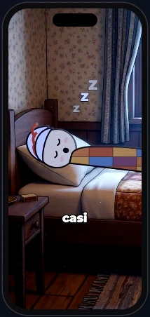

El despertador humano
Antes de los despertadores modernos, algunas personas recorrían las calles para despertar a los trabajadores golpeando sus ventanas.
CURIOSIDAD HISTÓRICAElige una curiosidad, prepara la voz y crea un Short con personajes 2D, escenarios 3D, cámara en movimiento y subtítulos.
Una guía práctica para crear tu primer Short. La descarga de la Skill se habilitará cuando la versión esté probada.

5 curiosidades preparadas para convertirlas en Shorts animados. Cada historia tiene su propio guion y escenas.

Antes de los despertadores modernos, algunas personas recorrían las calles para despertar a los trabajadores golpeando sus ventanas.
CURIOSIDAD HISTÓRICA
Antes de que las máquinas hicieran el trabajo, había personas encargadas de recoger y colocar los bolos después de cada tirada.
OFICIOS QUE DESAPARECIERON
Una antigua norma obligaba a que una persona caminara delante de determinados vehículos autopropulsados llevando una bandera roja.
LEYES EXTRAÑAS
Una fruta tan exclusiva que algunas personas podían alquilarla para exhibirla en reuniones y cenas, como símbolo de riqueza y prestigio.
COSTUMBRES CURIOSAS
La historia de cómo se transportó hielo natural desde Estados Unidos hasta la India, atravesando miles de kilómetros por mar.
HISTORIAS INCREÍBLESLo que necesitas para seguir el tutorial.
Mac o Windows, conexión a internet y espacio libre para el proyecto y los archivos.
La herramienta que coordinará la Skill y el proceso de creación.
DESCARGAR CLAUDE ↗El paquete de Nico Varel con instrucciones, recursos y flujo de producción.
DESCARGA EN PREPARACIÓNTu propia narración o un servicio compatible de generación de voz. Pueden aplicarse límites o costes.
Sigue el proceso de principio a fin. Las instrucciones definitivas de instalación se añadirán cuando la Skill esté probada.
Crea una carpeta nueva para tu proyecto, por ejemplo CuriosidadesAnimadas, y ábrela en Claude Code.
Descarga Claude desde su página oficial si todavía no lo tienes.Descarga el paquete gratuito y sigue las instrucciones incluidas para instalarlo en Claude Code.
El botón de descarga y la ruta exacta se publicarán aquí después de validar el instalador y probarlo en los sistemas compatibles.Selecciona una de las cinco ideas preparadas o introduce una historia propia. Claude investiga los datos, prepara el guion y organiza las escenas.
Graba la narración o utiliza un proveedor de voz compatible. Coloca el audio en la carpeta del proyecto siguiendo las instrucciones de la Skill.
Claude coordina personajes, escenarios, animación, cámara y subtítulos. Revisa el resultado y exporta el video vertical cuando el render esté terminado.
Una primera versión para que puedas probar el flujo y crear tu primer Short.
Porque probar una herramienta está bien. Aprender a crear contenido de forma constante, mejorar tus videos y saber qué hacer con esa habilidad es el siguiente paso. La plantilla es tuya: úsala y crea tu primer Short.
En AI Content Academy tienes cursos, sistemas, recursos, llamadas semanales, auditorías y una comunidad para seguir mejorando y convertir tus habilidades en oportunidades.
No necesitas saber animar. La Skill está pensada para coordinar el proceso. Puede que tengas que seguir instrucciones de instalación y revisar el resultado.
Los requisitos de cuenta y uso dependen de la versión de Claude Code y de las herramientas que utilice la Skill. Publicaremos los requisitos exactos después de probarla.
Sí. El flujo está pensado para aceptar una narración grabada. También podrá utilizarse un servicio de voz compatible si lo configuras.
La compatibilidad se indicará según las pruebas reales de la versión publicada. No queremos prometer compatibilidad antes de verificarla.
El recurso y la plantilla gratuita no tienen coste de descarga. Claude y algunos servicios externos pueden requerir una suscripción, créditos o límites de uso.
No se pueden garantizar visualizaciones. La cifra hace referencia al formato que estudiamos; los resultados dependen de la idea, la historia, la ejecución y la audiencia.